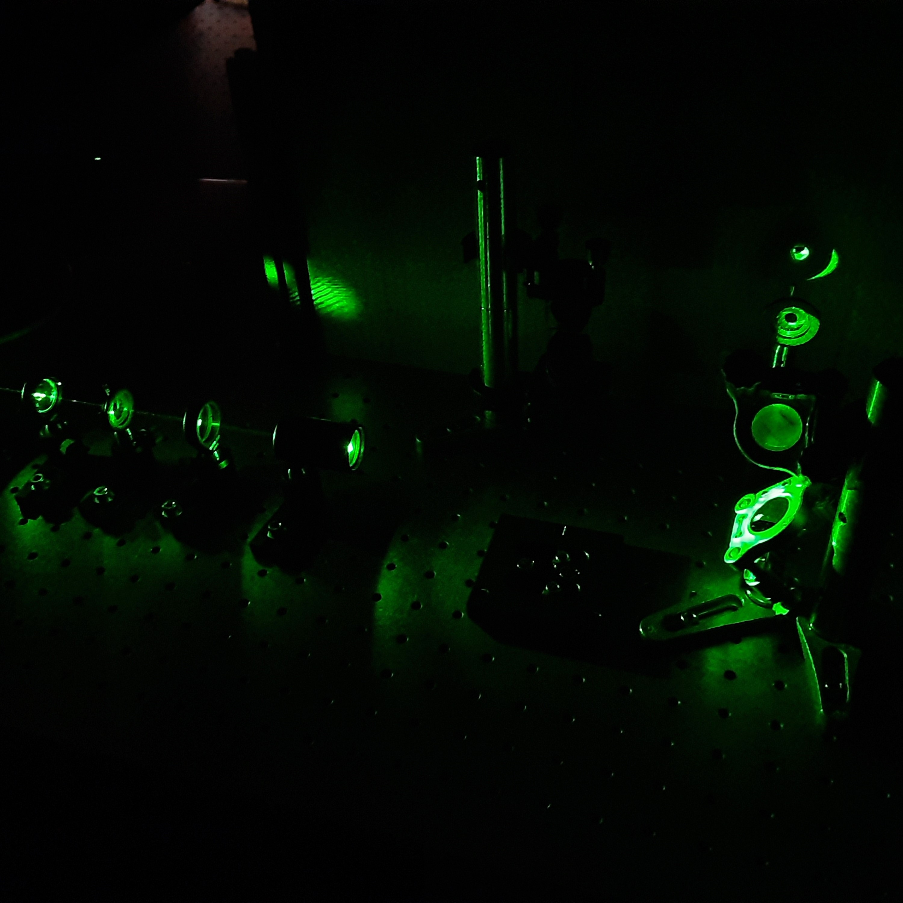

Kenneth Mikolaichik
"Dare to dream boldly, persevering against all odds towards creation."
We must not stop, only bravely forward into the unknown.
Obsessed with Flight
From birds to rocket propulsion, the ability to soar through the air is the end-all-be-all of abilities.
The entity that can do this most graciously and effortlessly will find itself with a great advantage in terms of impressiveness and logistical superiority.
It has been my goal to reach the razor's edge of industry, technology, and theory in all aspects associated with flight.
Current wing airfoil designs are decades old and new ideas are required to unite sub-orbit flight technology with space exploration.
Currently I am investigating interactions of the electromagnetic spectrum with metamaterials and nano-engineered condensed matter.
I am greatful to have the opportunity to participate in research as an undergrad with the University of Texas at San Antonio's physics department.

Magnus Effect Based Flying Contraption
Mystified by Machine Intelligence
In what stretch of code does a machine gain the ability to learn? If a machine becomes self aware, should we destroy it or nurture it?
Answers to these questions are far more pragmatic than surface level consideration would suggest.
If you are reading this then the ability to experiment with this technology is literally at your fingertips.
Being far too tantalizing for me to ignore, I have begun my own investigations into machine learning by building a functioning quadrupedal robot.
Named 'Regis' after the original developer of the CAD files, the first version of this robot is equipped with machine vision via an infared capable camera.
He also contains a gyroscope/accelerometer package and it is my intention to outfit him with multiple vibration sensors to allow him to feel out his environment.
While programming is not second nature to me, progress has been steady thanks to the open source community.
I am always on the lookout for collaborators with this project so please, if you are seriously interested, do not hesitate to contact me no matter what your experience level is.
The main programming language is python running within Linux on a Raspberry Pi board coupled to a solid state drive.
Regis - Intelligent Quadbot
Autobiography
My name is Kenneth Mikolaichik, a Texas native born 1990.
I grew up in Austin the youngest of three and only boy, son of a chemist and a seamstress.
I developed a knack for repairing every day things at a young age.
Ever hungry for more knowledge and spurred on by a desire to live comfortably, I attended the Liberal Arts and Science Academy High School in Austin.
After High School I worked a plethera of temporary and remedial positions looking for my place in societry.
I attended ITT tech in pursuit of an electrical engineering degree where I made the dean's list several times.
While still attending online, I joined the US Navy and received training as an aircraft mechanic in Pensacola Florida, where I achieved top of my class and class leader.
I received an award and was promoted immediately to E-4.
Within two years of my enlistment date I was again promoted to E-5 wherein I became the second shift supervisor of ten F-18 Superhornets for the airframes shop of VFA-151.
Upon exiting my military contact I resided in California for 2 years restoring dead and abandoned F-18’s that had not flown in years, a very rewarding job.
It was around this time that I completed an associates in aeronautics from Embry Riddle.
Missing my family, and longing for those Texas sunsets, I moved back to Texas.
I worked for Northrop Grumman for two years and then decided that was simply not enough; I needed to contribute to something more.
This was when I decided to pursue a physics degree at the University of Texas and seriously investigate new approaches to lift.
Approach Magazine, 2016, Volume 61, No. 3